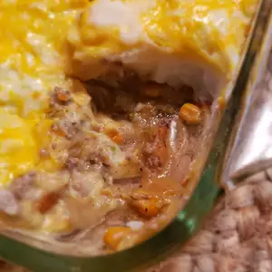

shepherds Pie

Description
This is an 'Americanized' version of that old standard, Shepherd's Pie. My family loves it! You can prepare your mashed potatoes as you normally would -- adding butter, milk, sour cream, whatever!
Ingredients
- 1 pound lean ground beef
- ½ cup chopped onion
- ½ cup chopped celery
- 1 (10.5 ounce) can condensed vegetable soup
- ½ teaspoon dried thyme
- 3 cups mashed cooked potatoes
- 1 cup shredded Colby longhorn cheese
Steps!
- Preheat oven to 350 degrees F (175 degrees C) and lightly grease a 2 quart baking dish.
- In a large skillet over medium-high heat, stir and cook ground beef, onion and celery until juices run clear. Drain. Pour mixture into baking dish with vegetable soup and thyme; stir well. Spread mashed potatoes on top.
- Bake 20 minutes. Sprinkle shredded cheese on top and bake 5 minutes more, or until cheese has melted.